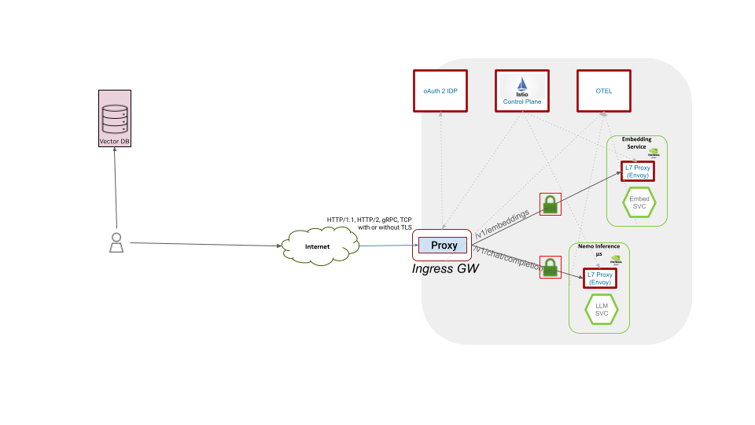

Securing NVIDIA Services with Istio and Keycloak#
Introduction#
In the evolving landscape of AI and machine learning, Retrieval Augmented Generation (RAG) stands out for its ability to dynamically retrieve and integrate external knowledge for real-time response generation. However, implementing RAG in a distributed environment poses significant challenges, particularly in secure service communication. This document proposes a reference architecture that leverages a service mesh framework to ensure secure, efficient communication within a RAG system while integrating with an external OpenID Connect (OIDC) provider for robust authentication and authorization.
NVIDIA NIM Overview#
NVIDIA NIM microservices are a set of easy-to-use microservices for accelerating the deployment of foundation models on any cloud or data center and helps keep your data secure. NIM microservices have production-grade runtimes including on-going security updates. Run your business applications with stable APIs backed by enterprise-grade support. For more information refer NVIDIA NIM
Service Mesh in NIM#
A service mesh is a configurable infrastructure layer designed to handle service-to-service communication in a microservices architecture, ensuring reliable data transfer, service discovery, load balancing, and more. In a NIM MicroServices, where multiple services (like retrieval microservices, encoding microservices, and language models) need to communicate efficiently, a service mesh serves as a backbone for managing these interactions.
Secure Communication Through Service Mesh#
Encryption
Ensuring that data in transit is encrypted and secure from external threats to ensure data privacy and compliance.
Authentication
Verifying the identity of services within the mesh.
Authorization
Controlling which services can communicate with each other and what resources they can access.
Integration with OIDC Provider
OpenID Connect (OIDC) is an authentication layer on top of OAuth 2.0 in this RAG architecture.
Role of OIDC
It provides a standardized way for services to authenticate using tokens, ensuring that only authorized services and users can access the RAG system’s components.
Integration Steps
The service mesh can be configured to work with an OIDC provider to validate tokens for each request, ensuring authenticated and authorized communication.
Benefits
When a user or service attempts to access the RAG system, the service mesh intercepts this request and checks for valid authentication tokens provided by the OIDC/OAuth2 service. This ensures that only authenticated users and services can interact with the RAG system, enhancing security and access control.
Performance and Scalability
The architecture supports horizontal scaling and can handle varying loads, ensuring high availability and minimal latency.
Architecture Diagram#
The diagram visualizes the first version of the Operator. Later more microservices can be added.

Use Cases#
Secure API Endpoints#
Implementation: The service mesh employs mTLS (mutual Transport Layer Security) to encrypt data transmitted between the API endpoints.
Functionality: All incoming and outgoing traffic from the API endpoints passes through the service mesh, where it is encrypted, ensuring data integrity and confidentiality.
Benefits: This encryption secures the API endpoints against interception and unauthorized access.
Ingress Management#
Implementation: The service mesh acts as an intelligent ingress controller, managing the flow of external traffic into the RAG system.
Functionality: It filters and routes incoming requests to the appropriate services within the RAG system, applying necessary security checks and load balancing.
Benefits: This ensures controlled and secure access to the system’s resources, preventing unauthorized access and optimizing resource utilization.
OpenTelemetry Protocol (OTLP) Telemetry#
Implementation: The service mesh is configured to support OTLP for collecting and exporting networking telemetry data.
Functionality: It captures metrics, access logs, and traces from different parts of the RAG system, forwarding them to an observability platform via OTLP.
Benefits: This enables real-time monitoring and analysis of the system’s performance and security, aiding in prompt issue detection and resolution.
RBAC for API Endpoints#
Implementation: Role-Based Access Control (RBAC) is integrated within the service mesh to manage access to API endpoints.
Functionality: The service mesh checks the roles and permissions of authenticated users or services against predefined policies to grant or deny access to specific endpoints.
Benefits: This ensures that only users or services with the appropriate permissions, especially those belonging to specific groups, can access certain endpoints, enforcing fine-grained access control.
Load Balancing#
Service-to-service communication within the mesh has source load-balancing with automatic service discovery. The mesh ingress endpoint creates Kubernetes service of type Load Balancer and is usually automatically realized on the infrastructure layer.